This hands on lab should take about 45 minutes.
Completion of HOL 1 including the Azure accounts set up
Optional physical Android device if you want to try Android steps & must have location enabled.
Internet connection
On UWP must have location turned on for device
Go to the Solutions folder with this content, locate the HOL2.zip file, extract it to a new folder under your Documents folder.
In the Documents > HOL 2 > src > Start > GPSImageTag locate the *.sln. Double click the file to open the solution in Visual Studio
Go to Xamarin Forms UWP head (1) and set it as the Startup Project (2).
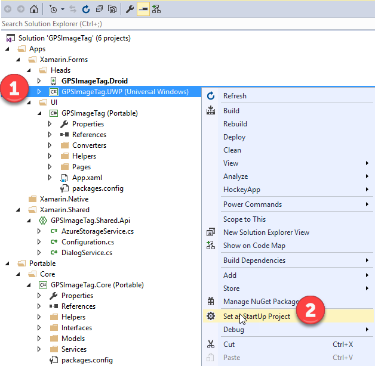
Press F5 to run the application.
Take a photo and upload. We are now tagging the photos with GPS coordinates. Select Upload Photo tab (1). Next click the ‘TakePhoto’ button (2). Enter the photo name and description (3). Click the Upload button (4).
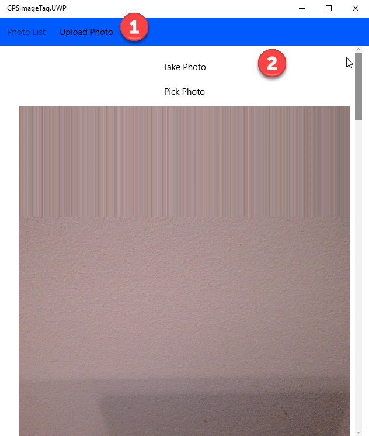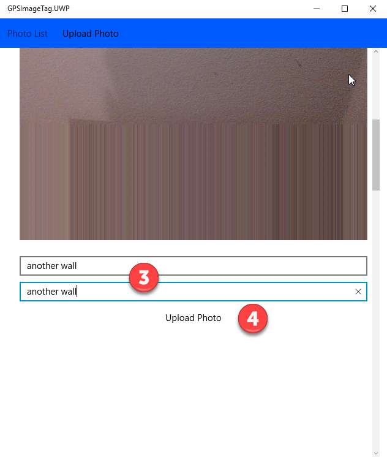
Now let’s try to update our photo list. Click on the Photo List tab (1). Click the Sync Photos button (2). We can see that the list has been updated with the photo from the previous step (3).
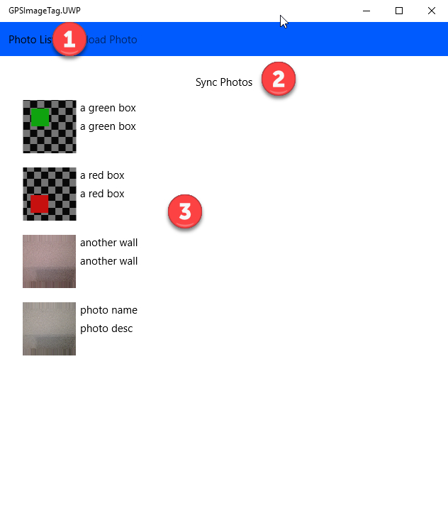
(Optional Android steps) Go to Xamarin Forms Android head (1) and set it as the Startup Project (2).
(Optional Android steps) Press F5 to run the application.
(Optional Android steps) Take a photo and upload. We are now tagging the photos with GPS coordinates. Select Upload Photo tab (1). Next click the ‘TakePhoto’ button (2). Enter the photo name and description (3). Click the Upload button (4).
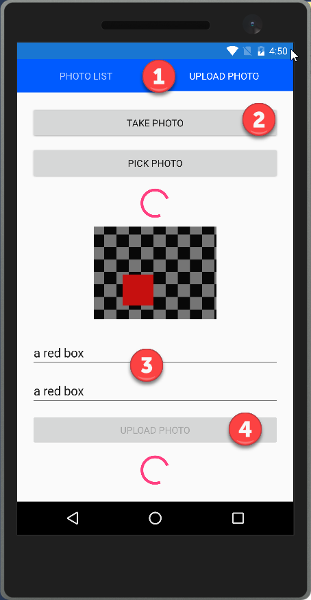
(Optional Android steps) Now let’s try out the update our photo list. Click on the Photo List tab (1). Click the Sync Photos button (2). We can see that the list has been updated with the photo from the previous step (3).
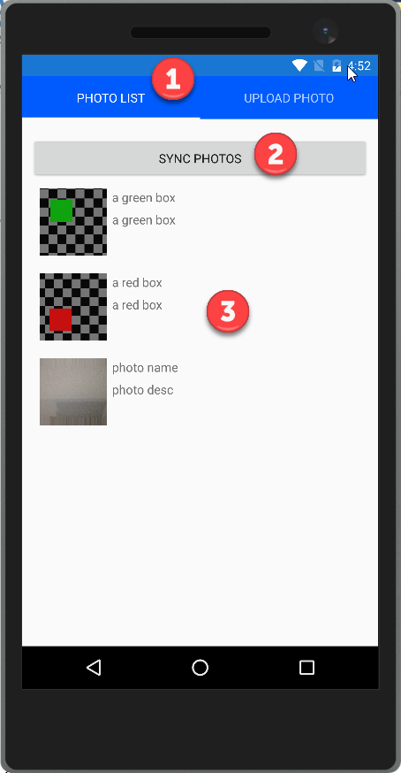
(Optional Android steps) For the Android version we can add in the rounded button effect.
(Optional Android steps) Open the RoundedButtonRender.cs in the GPSImageTag.Droid project. We need to uncomment the ExportRenderer namespace attribute (1). This means that whenever Xamarin forms find a Button used in XAML UI it will use the override methods in this RoundedButtonRender class which inherits from the Xamarin Forms ButtonRender class.
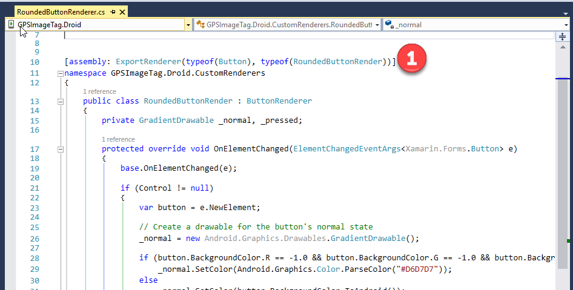
(Optional Android steps) Open the CameraPage.xaml located in the GPSImageTag project Pages folder. We need to add BorderRadius=”30” to each of the Button Xaml tags.
(Optional Android steps) Open the PhotosPage.xaml located in the GPSImageTag project Pages folder. We need to add BorderRadius=”30” to the Button Xaml tags.
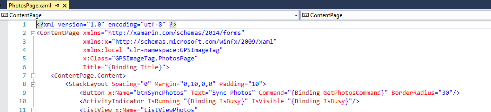
(Optional Android steps) Go to Xamarin Forms Android head (1) and set it as the Startup Project (2).
(Optional Android steps) Press F5 to run the application.
(Optional Android steps) We can see that the buttons on Android now have rounded corners.
In the next steps we will be adding GPS service and Map Control to our application. This will add the latitude and longitude to our photos and we will be able to add location pins on a map.
We need to add in the GPSService to the GPSImageTag.Core project. Select the Services folder (1). Next bring up the pop menu and select Add option (2). Then select the Existing item (3).
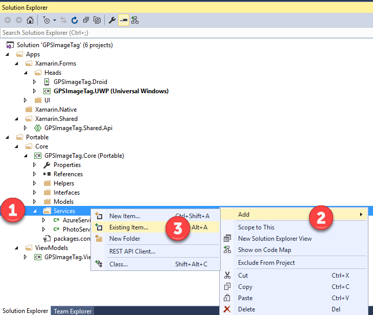
The file we need to add, can be found in the folder Documents > HOL 2 > src > Start > Codes > Services > GPSService.cs (1).
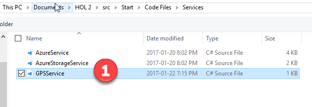
Next, we need to add in the interface class to the the GPSImageTag.Core project. Select the Interfaces folder (1). Next bring up the pop menu and select Add option (2). Then select the Existing item (3).
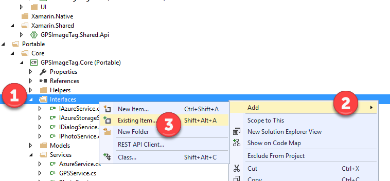
The file we need to add can be found in the folder Documents > HOL 2 > src > Start > Codes > Interfaces > IGPSService.cs (1).
Next we need to create a new data model class. This class will be used to pass the GPS coordinates from the GPS service to the Mobile App service. Create a new class called Maplocation.cs in the GPSImageTag.Core Models folder (Right-click->Add->Class). Replace the new file’s contents with the following code.
using Plugin.Geolocator.Abstractions;
using System;
using System.Collections.Generic;
using System.Linq;
using System.Text;
using System.Threading.Tasks;
namespace GPSImageTag.Core.Models
{
public class MapLocation
{
public double Latitude { get; set; }
public double Longitude { get; set; }
}
}
Next we need to register the new GPSService in the GPSImageTag.UWP. Add the following code into the RegisterServcies method in the App.xaml.cs file, as shown below (1).
ServiceManager.Register<IGPSService>(new GPSService());
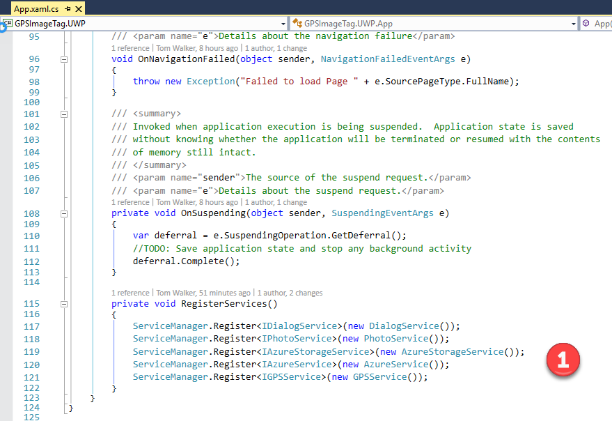
Next we need to register the new GPSService in the GPSImageTag.Droid. Add the following code into the RegistgerServcies method in the MainActivity.cs file (1).
ServiceManager.Register<IGPSService>(new GPSService());
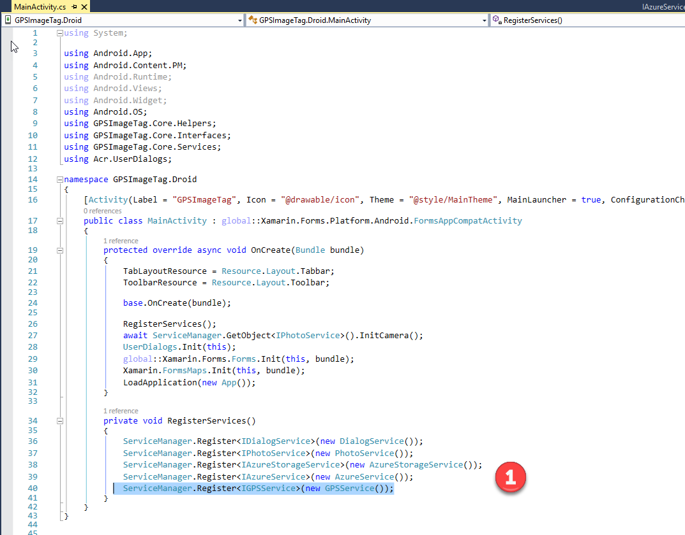
Next, we need to update the IAzureServices interface within the GPSImageTag.Core project. Update the AddPhoto method line with the code below.
Task<Photo> AddPhoto(byte[] image, string name, string desc, MapLocation currentloc);
Next, we need to update the AzureService to use the GPS coordinates from the GPSService. The class file can found in the Services folder of the GPSImageTag.Core. Update the AddPhoto method with the code below.
public async Task<Photo> AddPhoto(byte[] image, string name, string desc, MapLocation currentloc)
{
await Initialize();
var photo = new Photo();
var sasToken = await GetAzureStorageSasTokenAsync();
var imageUri= await storageService.UploadImage(new MemoryStream(image), name);
if (string.IsNullOrEmpty(imageUri))
return photo;
photo = new Photo
{
Name = name,
Description = desc,
Uri = imageUri.ToString(),
Latitude = currentloc.Latitude.ToString(),
Longitude = currentloc.Longitude.ToString()
};
//create and insert photo
await table.InsertAsync(photo);
//Synchronize coffee
await SyncPhotos();
return photo;
}
Next we need to update the CameraPageViewModel.cs to use the GPSService.cs. Select the ViewModels folder within the GPSImageTag.ViewModels project (1). Next bring up the pop menu and select Add option (2). Then select the Existing item (3)
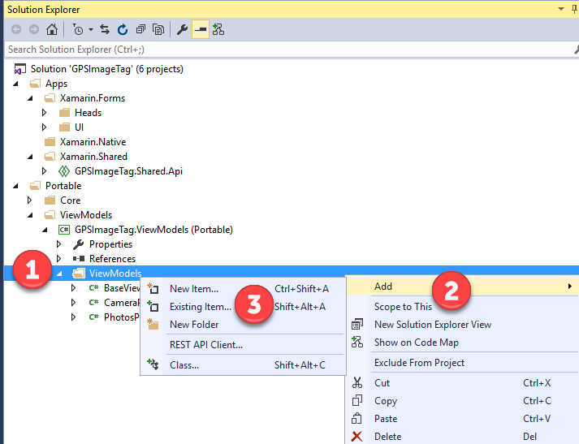
The file we need to add can be found in the folder Documents > HOL 2 > src > Start > Codes > ViewModels > CameraPageviewModel.cs (1)
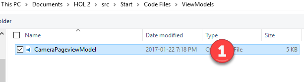
Now let’s add a new page to the project that will use the Map control to display the pins for each of the photos. Select the Pages folder within the GPSImageTag project (1). Next bring up the pop menu and select Add option (2). Then select the Existing item (3)
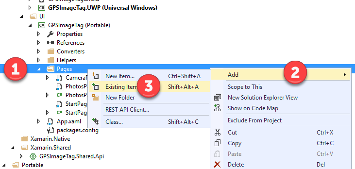
The files we need to add can be found in the folder Documents > HOL 2 > src > Start > Codes> Pages . We need to add both the MapPage.Xaml and MapPage.xaml.cs (1)
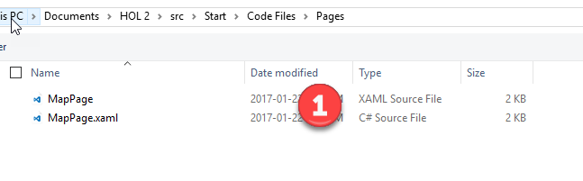
Make sure to correct the Build Action on the MapPage.xaml (1). Make sure the Build Action is set to Embedded Resource (2).
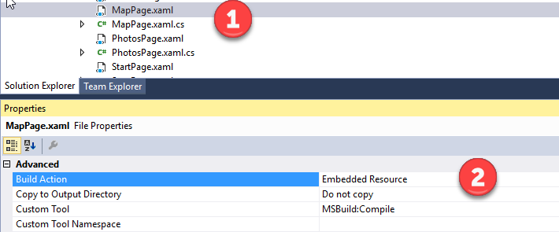
Now that we have Map page we need to update the tab navigation to include the new page. In the StartPage.xaml.cs in the GPSImage project. Add in the following code into the page constructor.
Children.Add(new MapPage());
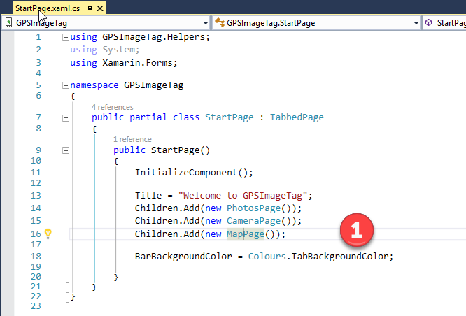
We need to enable the Location capabilities within the GPSImageTag.UWP. On the properties of the GPSImageTag.UWP select the Package Manifest (1).
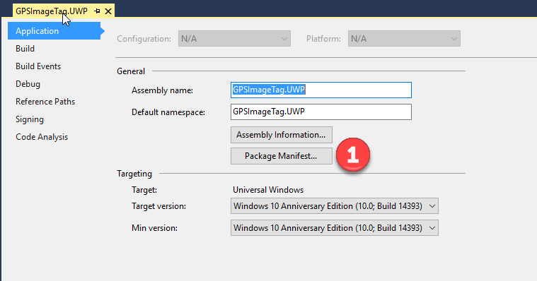
With the Capabilities tab (1), make sure that Location is enabled (2).
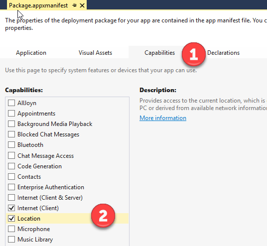
We need to a similar action with the GPSImageTag.Droid project. On the properties of the GPsImageTag.Droid project select the Android Manifest group (1). Make sure to enable the following Required permissions (2).
AccessCoarseLocation
AccessFineLocation
AccessLocationExtraCommands
AccessMockLocation
AccessNetworkState
AccessWifiState
Internet
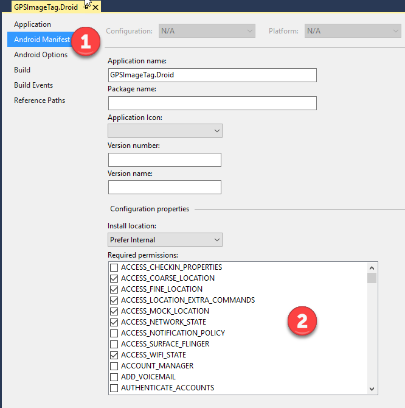
Go to Xamarin Forms UWP head (1) and set it as the Startup Project (2).
Press F5 to run the application.
In the UWP app select Upload Photo tab (1). Click on the Take Photo button (2). Enter the photo name and description (3). Click on the Upload Photo button (4).
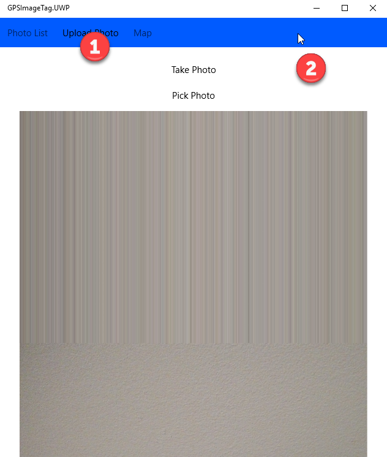 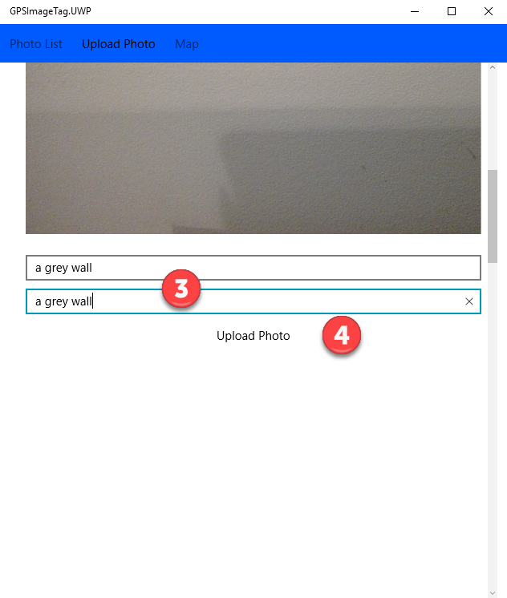
Now, click on the Maps tab (1). Click on the Load Photo Pins button (2). After a short delay, this will place the photo pins on the map control (3).
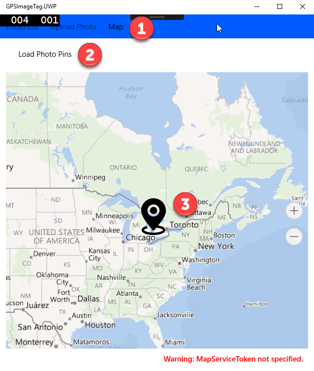
(Optional Android step) If you want to run this on Android you will need a physical device connected. You’ll need to set the GPSImageTag.Droid as the startup project and change to use your specific device instead of the emulator. Remember to change back to the UWP project for startup afterwards to continue.
In this section we will be updating the Azure Storage to remove the use of the Storage account name and key. Using the account name and key is the equivalent of using the full admin rights to the Azure Storage. We want to replace this with a more secure and managed method. We will be using Shared Access Signature key to control the access to the Azure Storage uploads.
Next, we need to update the interfaces files within the GPSImageTag.Core. Select the Interfaces folder in the GPSImageTag.Core project (1). In the pop menu select the Add option (2). Now, select the Existing Item option (3).
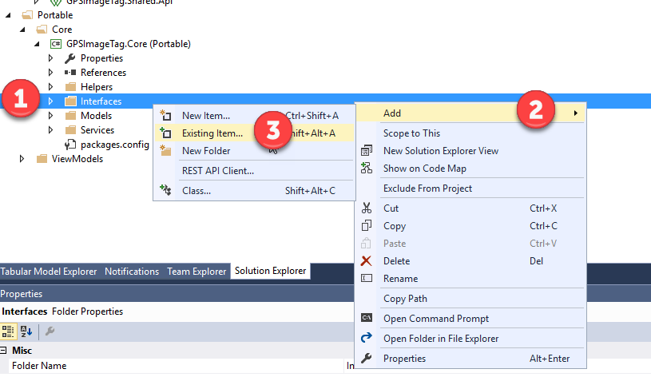
Select the files IAzureService.cs and IAzureStorageService from the folder the Documents > HOL 2 > SRC > Start > Code Files> Interfaces (1). Next, click the Add button.
Enable the Apply to all items (1). Then Click the Yes button to confirm replacing the existing files (2).
Next, we need to update the Azure service class file within the GPSImageTag.Core. Select the Services folder in the GPSImageTag.Core project (1). In the pop menu select the Add option (2). Now, select the Existing Item option (3).
Select the file AzureService.cs from the folder the Documents > HOL 2 > SRC > Start > Code Files> Interfaces (1). Next, click the Add button.
Click the Yes button to confirm replacing the existing file (1).
Login into the Azure Portal
Open the mobile service that was created from HOL 1 (1). Search with “Easy” to locate. Then click Easy tables option (2).
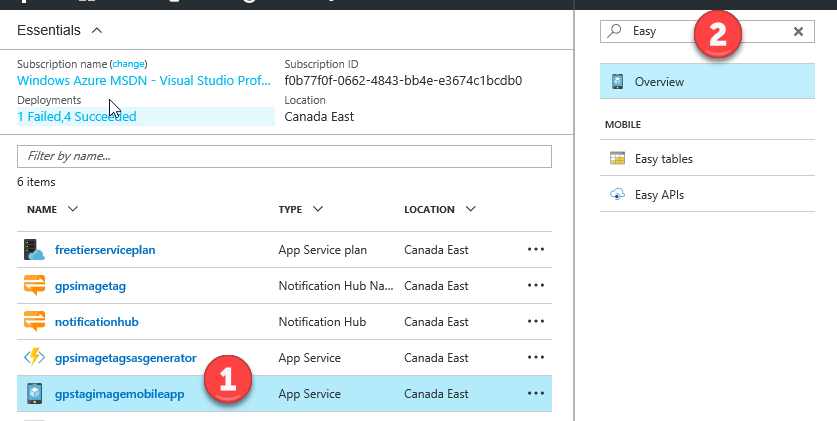
Click on the photo table to open it (1).
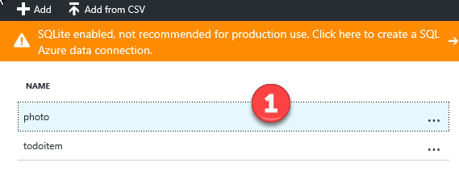
Click the Edit script option to open the Node.js backend (1).
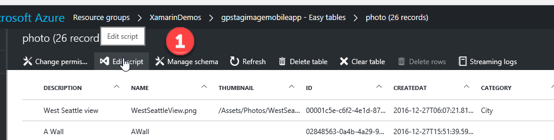
Click on the Open Console option (1).
Enter “npm install azure-storage” into the console and press enter to execute the command (1). This will add the Node.js modules for the AzureStorage service to the Easy Table backend.
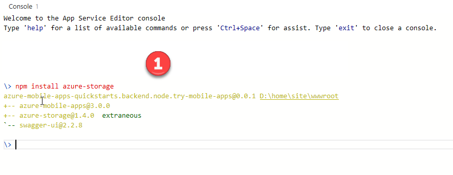
Bring up the pop menu and select New Folder option (1). Enter “api” for the folder name. This is the default folder the Node.js service looks for customized endpoints to the service.
Select the api folder. Bring up the pop menu and select the New File option.
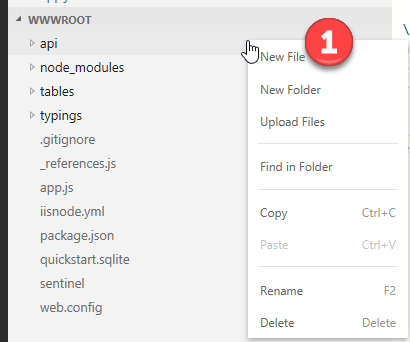
Use the name “azurestoragesasgen.js” for the new file (1).
Paste the following code into the new javascript file. The online editor will auto save for you. Make sure to update both the Storage Account Name and Key with the Storage account being used for the photos, with information you used for HOL 1.
function CreateGuid() {
function _p8(s) {
var p = (Math.random().toString(16)+"000000000").substr(2,8);
return s ? "-" + p.substr(0,4) + "-" + p.substr(4,4) : p ;
}
return _p8() + _p8(true) + _p8(true) + _p8();
}
var api = {
// To create a Shared Access Signature (SAS), use the generateSharedAccessSignature method
get: (request, response, next) => {
var containerName = 'photos';
var guid = CreateGuid();
var blobName = guid + '.png';
var accountName = '<Storage Account Name goes Here>';
var accountKey = <Storage Account Key goes here>';
var azure = require('azure-storage');
var blobService = azure.createBlobService(accountName,accountKey);
var startDate = new Date();
var expiryDate = new Date(startDate);
expiryDate.setMinutes(startDate.getMinutes() + 100);
startDate.setMinutes(startDate.getMinutes() - 100);
var sharedAccessPolicy = {
AccessPolicy: {
Permissions: 'rwc',
Start: startDate,
Expiry: expiryDate
},
};
var token = blobService.generateSharedAccessSignature(containerName, blobName, sharedAccessPolicy);
var sasUrl = blobService.getUrl(containerName, blobName, token);
response.send(JSON.stringify(sasUrl));
}
};
module.exports = api;
Go back to Visual Studio. Now we need to update the Azure Storage service to use Shared Access Signatures. Select the GPSImageTag.Shared.API project (1). In the pop menu select the Add option (2). Now, select the Existing Item option (3).
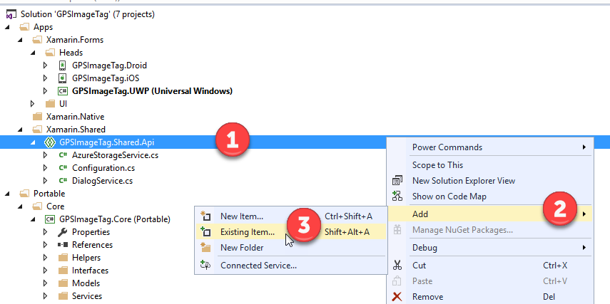
Select the file AzureStorageService.cs from the folder the Documents > Demo2.4 > SRC > Start > Code Files> Services (1). Next, click the Add button.
Click on the Yes button to overwrite the existing file.
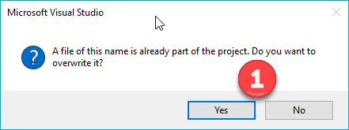
Delete the file Configuration.cs. This previously stored your confidential access details that we nolonger want to have stored in the application code.
Go to Xamarin Forms UWP head (1) and set it as the Startup Project (2).
Press F5 to run the application.
In the UWP app select Upload Photo tab (1). Click on the Take Photo button (2). Enter the photo name and description (3). Click on the Upload Photo button (4).
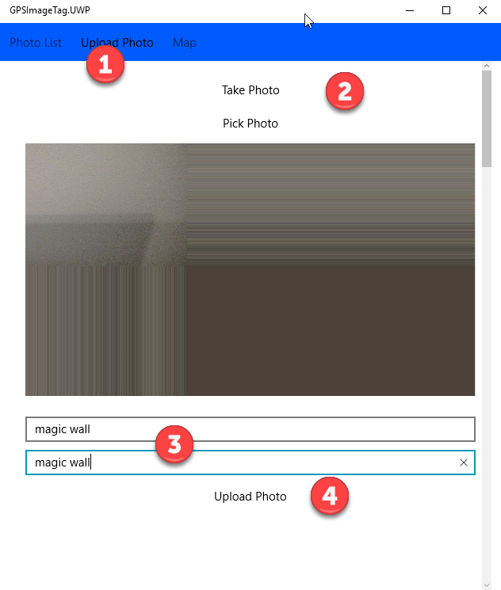
Login into the Azure portal and verify the photo has been uploaded into the Azure table. We can see that the Azure Storage URI is still being set for the photo (1).
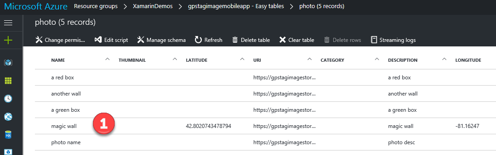
In this next few steps we will leverage Azure Functions. Azure Functions are great for running small pieces of code, or "functions," in the cloud. You can write just the code you need for the problem at hand, without worrying about a whole application or the infrastructure to run it In this next series of steps we will be adding in the feature to be able to create thumbnails of our photos. We will add the call to the Azure Function in the Photos ViewModel class. This will be used for generating the list of photos in the Photos page as thumbnails rather than full-size downloads.
Login into the Azure portal. We need to add in a new Azure Function to the existing Resource group (1).
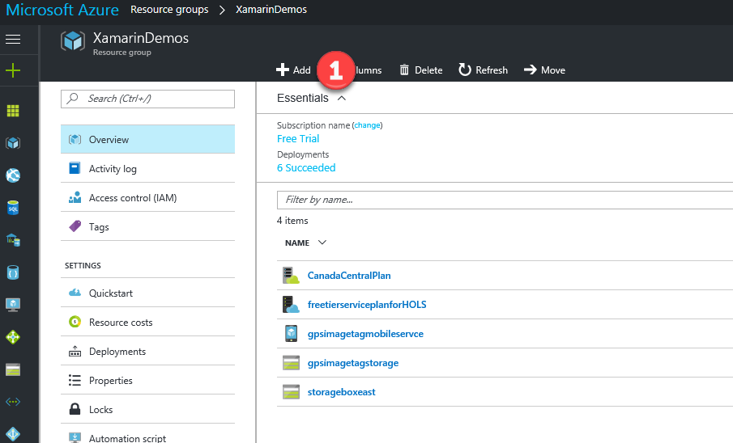
Enter in the search term of ‘Function’ (1) this will narrow down the list. Select Function App to continue (2).
Click on the Create button (1).
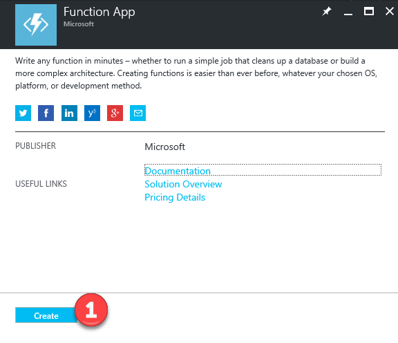
In the next blade, enter the App name ‘gpsimagetagfunctions’ (1). Make sure to set the Location to a region nearest you (2). Finally click on the Create button (3).
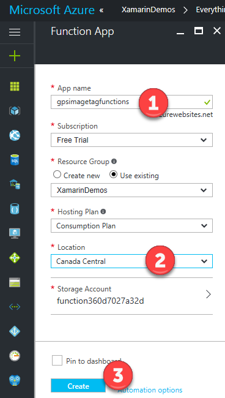
After the Azure Function has been created. Refresh the services list in the resource group for hands on labs (1). Click on the ‘gpsimagetagfunctions’ Azure Function to open it.
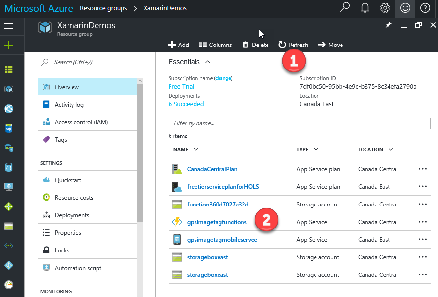
On the Function app blade click on the New Function button (1).
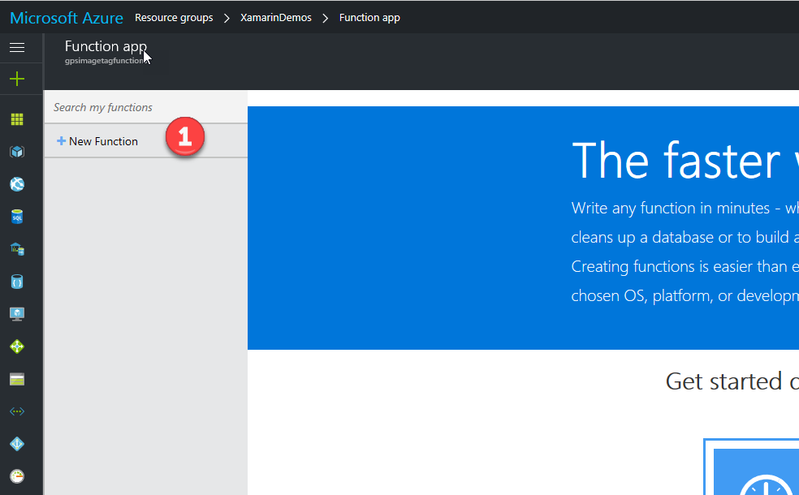
In the list of templates, we will be using the HTTPTrigger – Csharp one. This will allow you to easily call the Azure Function from within our code by making a web request.
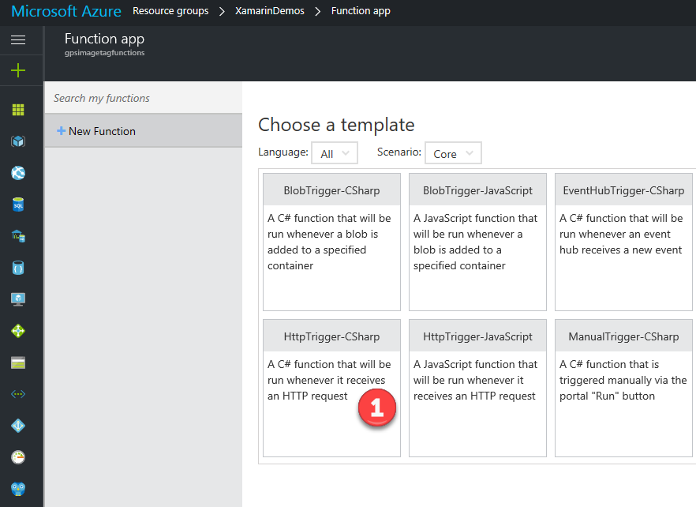
Enter PhotoResizer for the name of the function (1). Set Authorization level to Anonymous (2). Finally click on the Create button (3).
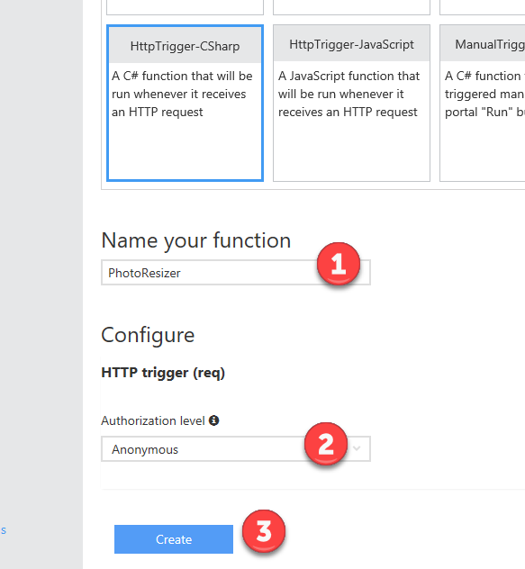
Replace the templated code in the function with the code below (1). Next, click the save button (2).
#r "System.Drawing"
using System.Drawing;
using System.Drawing.Imaging;
using System.Net;
using System.IO;
using System.Net.Http;
using System.Net.Http.Headers;
public static async Task<HttpResponseMessage> Run(HttpRequestMessage req, Stream imageStream, TraceWriter log)
{
log.Info("C# HTTP trigger function processed a request.");
log.Info($"C# Blob trigger function Processed blob\n Size: {imageStream.Length} Bytes");
var outputStream = new MemoryStream();
Image image = Image.FromStream(imageStream);
Image thumb = image.GetThumbnailImage(120, 120, () => false, IntPtr.Zero);
thumb.Save(outputStream, ImageFormat.Png);
outputStream.Position = 0;
var response = req.CreateResponse();
response.Content = new StreamContent(outputStream);
response.Content.Headers.ContentLength = outputStream.Length;
response.Content.Headers.ContentType =
new MediaTypeHeaderValue("image/png");
return response;
}
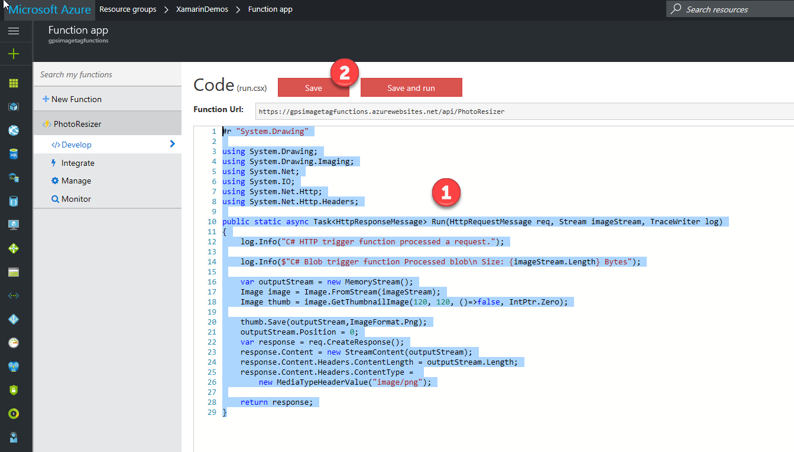
Now we need to be pass in the photo name when we call the function from our app. Click on the Integrate option (1). Make sure Triggers option is selected (2). Set the Route template to photoresizer/{photoName} (3). Finally click on the Save button (4).
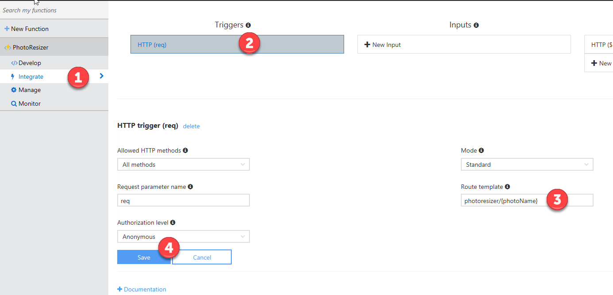
To add in the use of Azure Storage account that contains our photos, we need to create a new connection string variable for our function to use. Below the lower left of the Azure Function blade, click on the Function app settings (1).
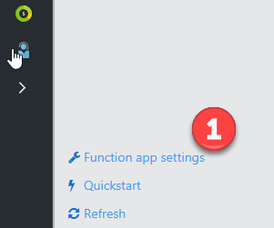
On the settings panel, click on the Go to App Service Settings button (1).
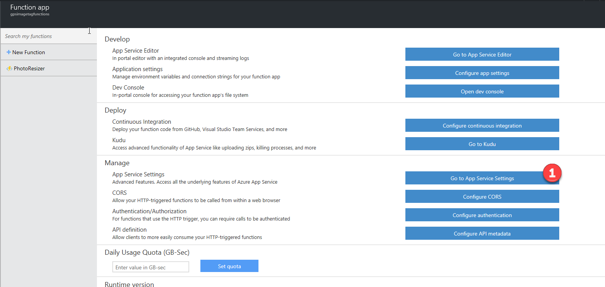
Click on the Application settings (1).
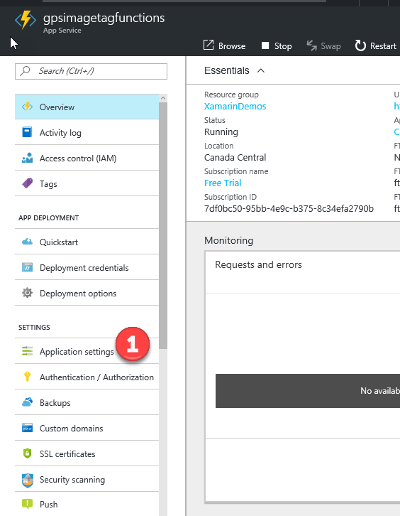
We will need the Storage account name (1) and Key (2) from our Storage Account that is storing our photos.
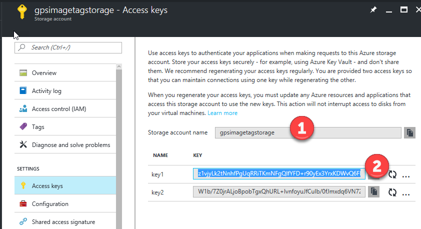
We need to create a new App settings variable called StorageConnection (1). The value will be the connection string (sample below) to the Azure Storage account (2). Click Save button (3). Closing the Applications settings blade.
DefaultEndpointsProtocol=https;AccountName=<Storage Account Name>;AccountKey=<Azure Storage Key>
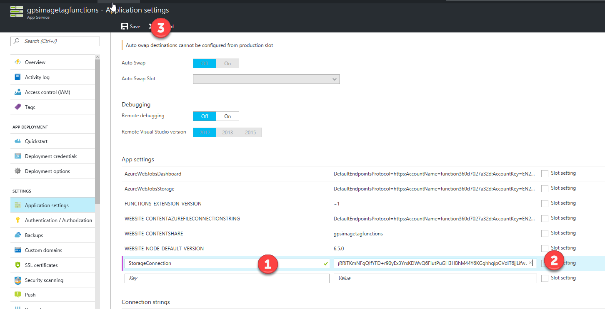
Back in the Function app blade. Click on the PhotoResizer (1).
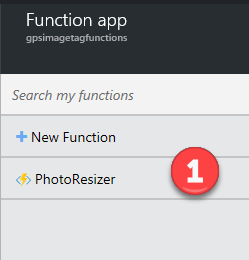
Now we need to connect our Azure Storage that contains our photos as an input to the function. Click on the Integrate option (1). Next, click ‘New Input’ button (1). Select Azure Blob Storage (2). Click on the Select button (3).
Enter the Blob parameter name of imageStream (1). Next set the Storage account connection to the StorageConnection (2). Next, set the Path to photos/{photoName}. This is the photos container in our Storage Account. Finally, click on the Save button (4).
Click on the Develop option (1). We need to copy the Function Url without the {photoName} at the end. We need this url to update our app.
In Visual Studio, open the PhotosPageViewModel.cs. We need to update the GetPhotos method to have this updated foreach code (1). This means that the Url for the image will be replaced with a Url to the resize method with a parameter of the image name. The UI will then load smaller images from the resizer rather than the large images directly.
foreach (var item in items)
{
item.Uri = ResizePhoto(item.Uri);
Photos.Add(item);
}
Next, we need to add the below code into the PhotosPageViewModel.cs (1). Finally, we need to update the Azure Function variable with the url we’ve copied from our function.
private string ResizePhoto(string url)
{
var azureFunction = "<Azure Function Url goes here>";
var returnpos = url.LastIndexOf("/") + 1;
var imagename = url.Substring(returnpos, (url.Length - returnpos));
string thumburl = $"{azureFunction}{imagename}/";
return thumburl;
}
Go to Xamarin Forms UWP head (1) and set it as the Startup Project (2).
Press F5 to run the application.
On our Photos page click on the Sync Photos button (1). We can see that we are using the Azure Function now to generate thumbnails from our photos (2).
(Optional Android steps) Go to Xamarin Forms Android head (1) and set it as the Startup Project (2).
(Optional Android steps) Press F5 to run the application.
(Optional Android steps) On our Photos page click on the Sync Photos button (1). We can see that we are using Azure Function now to generate thumbnails from our photos (2).
Congrats, on completing hands on lab 2.